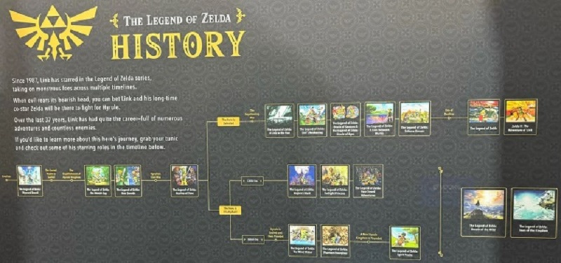

La franchise de The legend of Zelda est l'une des franchises de jeux vidéos les plus appréciées dans le monde avec son histoire captivante et ses gameplays tout aussi amusants que poussés. En vu du nombre de jeux de la license, de nombreux joueurs ont essayé de ranger les jeux chronologiquement. C'est là qu'un problème s'est posé ! Certains jeux entrent en contradiction les uns avec les autres, rendant la chronologie totalement illogique! Enfin, jusqu'à ce que nintendo sorte la timeline officielle de la license. Nous observerons donc la chronologie des jeux en détail!
